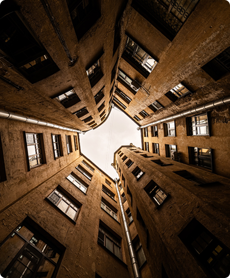

Петербургские дворы:
архитектура настроения
Откройте для себя город заново. Исследуйте атмосферные дворы — колодцы, находите места, созвучные вашему настроению, и погружайтесь в историю петербургской архитектуры через уникальный эмоциональный опыт.
Подобрать по настроению